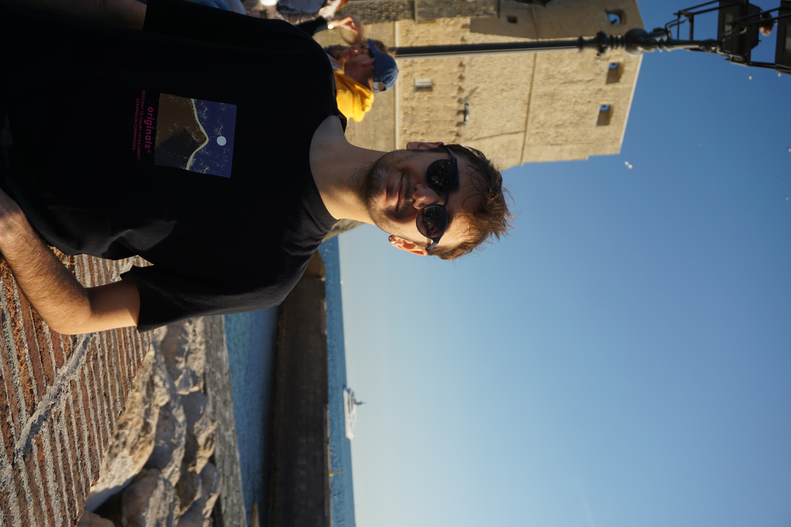

AI Engineer • M.Sc. Artificial Intelligence Engineering @ University of Passau
I build computer-vision pipelines, machine-learning models, and on-device AI systems — from training and evaluation to the production software around them.

From perception models to production systems — open a card for its architecture breakdown.
AI-powered drone software for object tracking and friend-or-foe identification.
Machine learning model analyzing customer data for banking risk assessment.
Local-first, privacy-focused photo processing & framing engine (PWA & Android).
Enterprise inventory, invoicing, and sales margin services with WhatsApp/Email APIs.
Multiplayer card game built in Unity backed by .NET 7 REST API.
Pragmatic engineering stack chosen for speed, reliability, and local execution.
Concentrating in Deep Learning, Computer Vision, autonomous neural architectures, and edge deployment.
Delivering production Oracle APEX architectures, automated inventory margins, WhatsApp API notifications, and mission-critical database operations.
Graduated with strong foundations in Data Structures, Algorithms, Operating Systems, Database Systems, and Network Architecture.
Hands-on software development across mobile game engines, educational network backends, and industrial hardware-interfacing codebases.
Physical discipline and resilience under pressure that directly inform engineering tenacity.
Trained and competed for over a decade in high-speed, full-contact team hockey. Developed instincts for real-time strategic awareness, rapid decision-making under intense physical pressure, and unwavering dedication to collective team accountability.
Practicing breath-hold freediving and spearfishing demands absolute physiological control, extreme calm under hypoxic stress, and razor-sharp environmental focus. In underwater solitude, patience and calculated risk assessment are non-negotiable.
A small collection of architectural, coastal, and urban moments. Open the slideshow to take a look.
Open for collaborations, software engineering roles, and discussions around local-first architecture and AI.